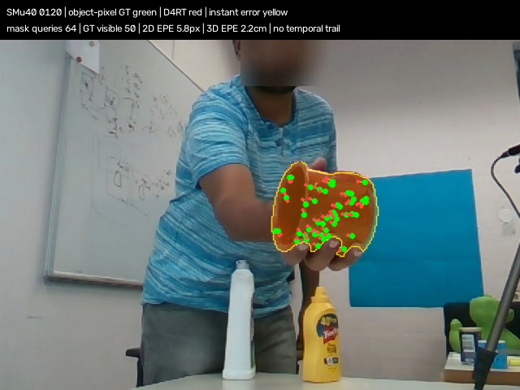

Method at a glance
- Ground the interactionInstruction-aware object selection identifies source objects and destinations. SAM3 masks and explicit acceptance checks define which pixels may provide guidance.
- Extract 4D featuresOpenD4RT queries track selected object pixels through recorded video windows, producing decoder features, trajectories and visibility information.
- Align features with actionsA learned adapter attaches view and object-role identities, then supplies time-aligned keys and values to the policy’s native cross-attention layers.
- Test the hypothesisPaired training compares guidance on/off using matched samples, noise and initialization. Offline action error and tracking quality are measured separately.
Schematic summary of the project workflow.
Problem and research direction
A dynamic manipulation policy must reason about objects that move while the robot is observing and acting. Images and language alone do not expose a persistent, explicit representation of which surface points belong to the target or how those points move over time. D4rtVLA explores whether a 4D reconstruction-and-tracking model can supply that missing structure.
The working hypothesis is to connect task-relevant object motion features to action generation without replacing the pretrained VLA policy. This remains a research question: an implemented conditioning path and lower errors in a small pilot do not by themselves establish better robot task success.
My contribution
I developed the integration around the existing DynamicVLA and OpenD4RT models: instruction-conditioned object/mask preparation, accepted-feature sidecars, action-time alignment, multi-view and object-role embeddings, batch-local token padding, and the attention adapter. I also built reproducible dataset subsets, normalization and split checks, paired ablation tools, and visual tracking diagnostics.
A substantial part of the work was defining reliable interfaces between perception and control. Missing or rejected masks must not silently become valid conditioning tokens; source objects, destinations and candidate sources must retain distinct identities; and the same sampled point must stay aligned across pixel coordinates, decoder features and future 3D pseudo-labels.
Architecture: 4D features inside a flow-matching policy
The policy retains DynamicVLA’s flow-matching action generator. A 16-layer action expert alternates eight joint self-attention layers with eight cross-attention layers. It predicts a 16-step action chunk, each step containing translation, rotation and gripper commands.
Frozen OpenD4RT decoder features have 1,280 channels. A shared learned projection, view embedding and role embedding turn them into policy tokens; each cross-attention layer has its own key/value projections. Action query t attends only to the object-point features aligned with that future step, rather than a flattened memory of every future time. A negative initial attention bias keeps the new memory nearly closed at initialization.
The extra features enter the existing cross-attention memory alongside visual, language and robot-state features. They do not create an additional action-attention block. OpenD4RT and segmentation are run offline to prepare detached sidecars, while the policy learns the adapter and action-conditioning path. The stored 3D trajectories are pseudo-labels, not ground-truth robot action supervision.
Datasets and reproducible experiments
The prototype uses DOM dynamic-manipulation data and an extended DOM-Plus workflow. I prepared a 2,080-episode DOM subset with 1,664 training, 208 validation and 208 test episodes, consistent reindexing and training-only normalization. Its per-source-chunk split is an IID diagnostic split, not evidence of unseen-task generalization.
A later DOM-Plus setup uses a frozen 80-episode generation-complete snapshot with a task-stratified 64/8/8 assignment. Every raw frame remains a policy sample: frames without accepted guidance take the baseline path. Paired training shares each sample batch and flow-matching noise/time draw across both conditions, which isolates the effect of feature injection more carefully.
What the experiments show
Tracking and action generation are assessed separately. Saved YCBInEOAT and HO-3D diagnostics compare predicted object-pixel tracks with corresponding ground truth; they are evaluation of the tracking component, not robot rollouts. Offline policy evaluation excludes padded action steps and reports overall, translation, rotation and gripper L1/MSE.
Results were mixed. In one archived 31/4/4-episode train/validation/test comparison, guidance slightly improved validation action L1 but worsened held-out test action L1. Earlier smaller pilots therefore cannot support a broad improvement claim. Stricter accepted-mask schemas also superseded historical feature sets, making data-version consistency part of the evaluation problem.
Why it remains unfinished
The current feature pipeline can use future frames from prerecorded clips. This makes it useful for offline feature-conditioning experiments, but it does not demonstrate a causal online policy. The implementation explicitly leaves streaming inference unimplemented until the guidance-aware worker can transport the required hidden states.
Remaining work includes generating useful guidance from information available at decision time, improving grounding and visibility calibration, repeating controlled comparisons over broader held-out tasks, and measuring closed-loop task success and latency. A related instruction-conditioned point-DETR prototype explores task grounding with Qwen features; it is a separate branch, not proof that the complete 4D-to-action system has been deployed.
Project visuals



Related resources
- D4RTOriginal dynamic-scene reconstruction and tracking method.
- OpenD4RTThird-party PyTorch implementation used for feature extraction.
- DynamicVLAUnderlying flow-matching policy.
- DOM dataset
Unfinished prototype. Technical progress and offline diagnostics are separated from the remaining causal streaming and closed-loop evaluation work.